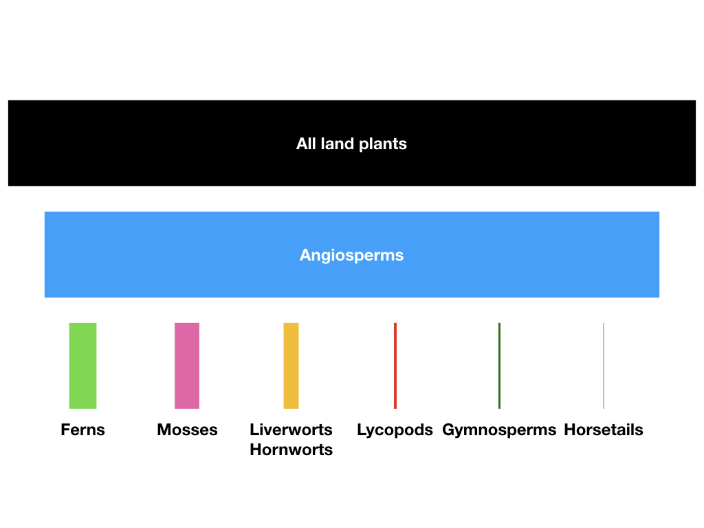
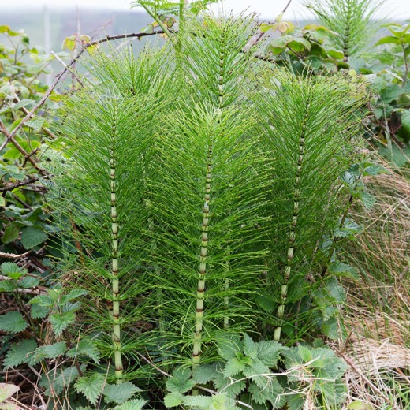
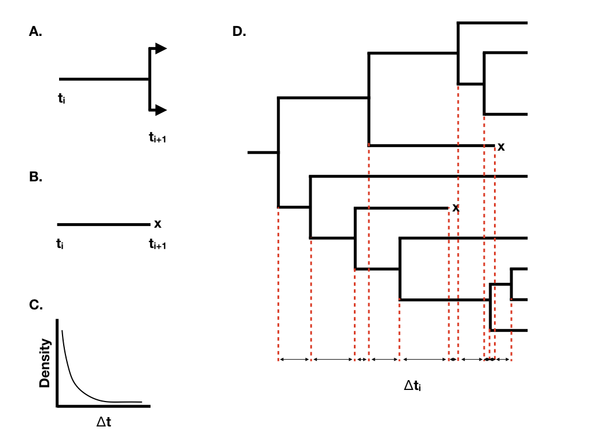
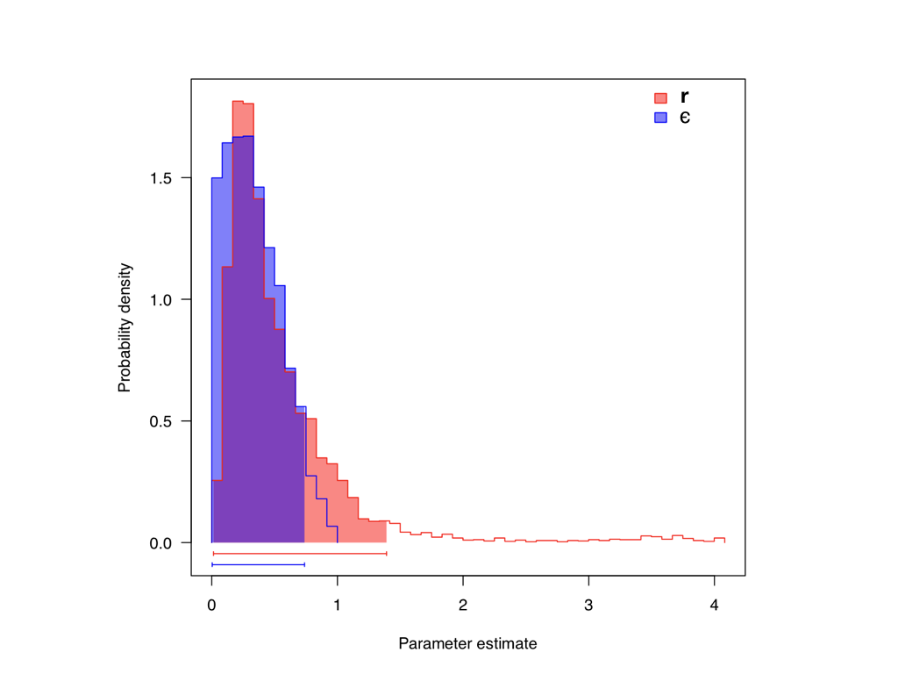
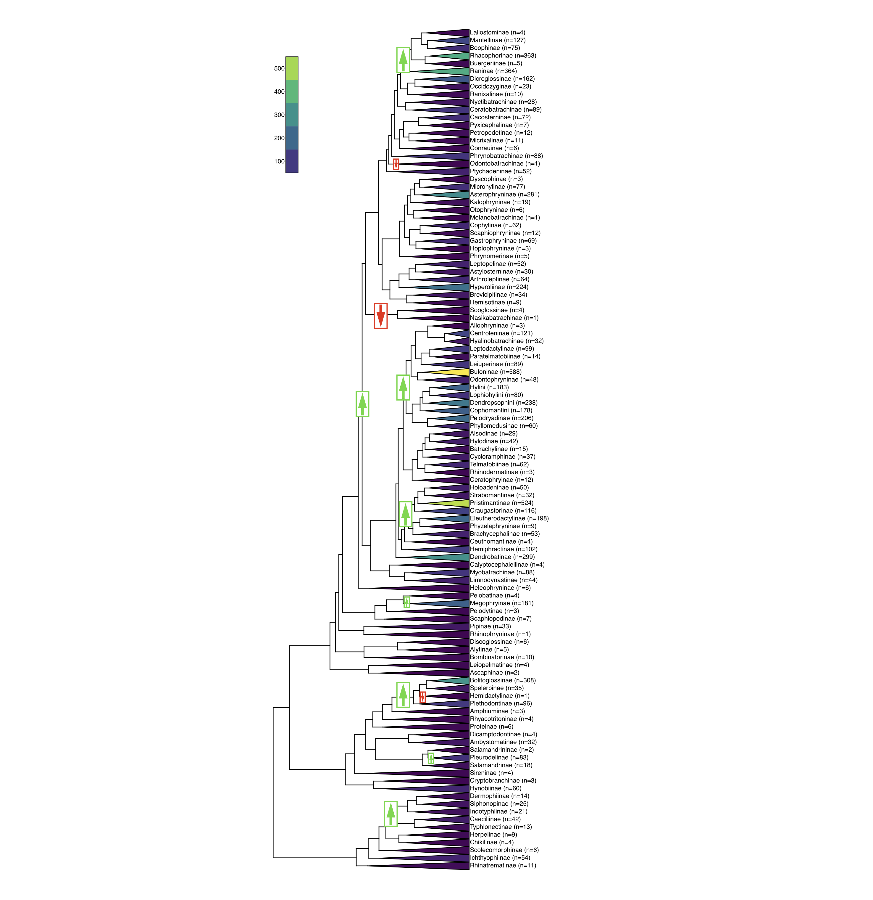
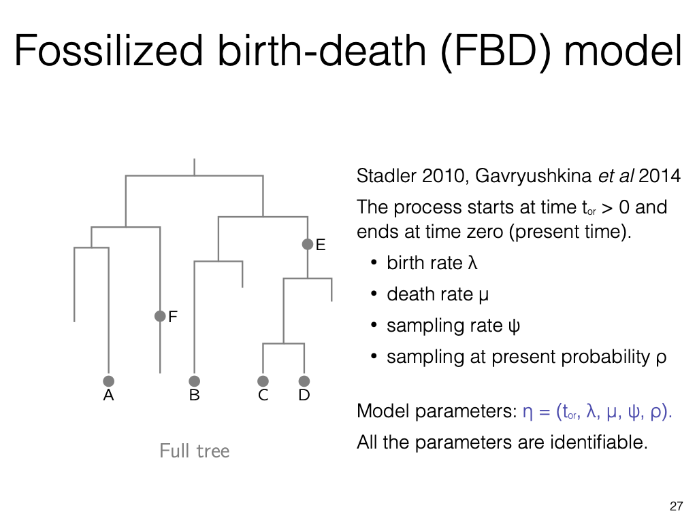
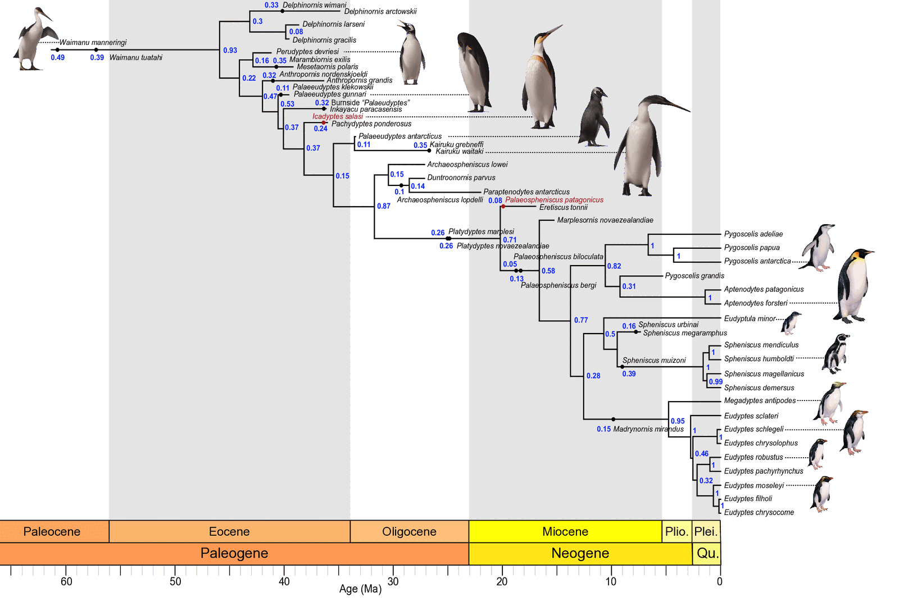
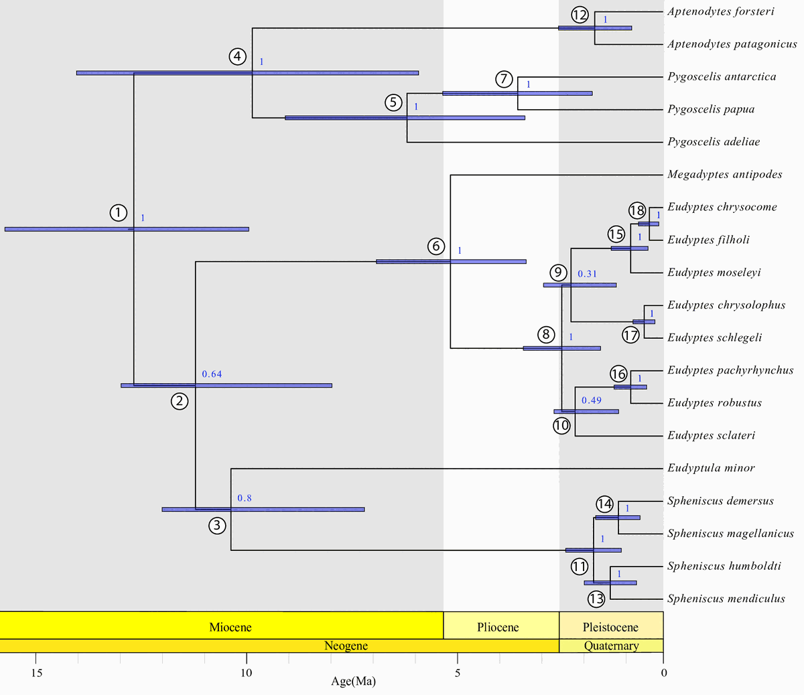

From the genealogy within a species to the tree of species
Last lecture the multispecies coalescent nested gene trees inside a species tree. This lecture asks where the species tree itself comes from, and what its shape records about speciation and extinction.
A full birth-death tree (left) and the reconstructed tree of survivors we actually observe (right). After Stadler (2010).
Why is the tree of life so uneven?

Living diversity of the major land-plant lineages. Harmon (2019), PCM, Fig. 10.1 (CC-BY 4.0).
Angiosperm: Magnolia sieboldii. Ned Friedman, CC BY-SA 4.0.

Horsetail: Equisetum telmateia. R. & N. Crawford, CC BY-SA 2.0.
About 300,000 flowering-plant species share the planet with roughly 15 living horsetails, the whole of the family Equisetaceae. Comparable imbalance appears across the tree of life.
Two processes set the balance: the rate at which lineages split (speciation) and the rate at which they die out (extinction).
This lecture builds the model that links those rates to the shape of a phylogeny, and asks how much of the history we can read back out.
Two directions in time
Backward: the coalescent
Start from sampled lineages in the present and merge them back to common ancestors. This is the natural view within a population, where we sample the survivors.
Forward: the birth-death process
Start from one lineage in the past. It splits (a birth, speciation) and it dies (a death, extinction). Run the process forward and a tree of species grows.
Both describe the same kind of object, a rooted tree, from opposite ends of time. For species, where extinction matters, the forward birth-death view is the more natural starting point.
The Yule process: speciation as a birth
Every lineage splits independently at a constant rate $\lambda$. With more lineages, more splits happen, so diversity grows geometrically: $E[\,n(t)\,]=e^{\lambda t}$. Individual histories scatter around that expectation.
Choose a speciation rate. Pure birth (no extinction); a simulated realisation against the deterministic expectation, log scale.
Adding extinction: the birth-death process

A: speciation. B: a lineage going extinct. C: waiting times are exponential. D: a full tree; lineages marked x leave no survivors. Harmon (2019), PCM, Fig. 10.2 (CC-BY 4.0).
Each lineage now also goes extinct at a constant rate $\mu$. Two combinations summarise the process:
- Net diversification $r=\lambda-\mu$: how fast surviving diversity accumulates.
- Relative extinction $\varepsilon=\mu/\lambda$: extinction as a fraction of speciation, from 0 (Yule) to 1.
A clade can be rich today through fast speciation, slow extinction, or both. Separating $\lambda$ from $\mu$ is the central difficulty.
Extinction is hidden: the reconstructed tree
A birth-death tree simulated in front of you, growing left to right. Grey lineages leave no living descendant.
The blue trace back from the present is the reconstructed tree. This is the exact macroevolutionary parallel of the coalescent, where we only see the survivors of a population.
The signal of extinction is therefore indirect. It must be read from the spacing of the branching events that remain.
Reading the process from the shape
A lineage-through-time plot counts lineages in the reconstructed tree as it grows toward the present, here scaled to the final diversity. Raise $\varepsilon$ and watch the curve bend upward near the present.
All curves share the same net rate $r$, so the same deep slope. Extinction steepens only the recent past: the pull of the present. Recent lineages have had little time to die, so survivors over-represent them.
Estimating diversification: the role of the prior

Posterior estimates for one tree: net rate $r$ (red) is well constrained, relative extinction $\varepsilon$ (blue) is not. Harmon (2019), PCM, Fig. 11.3 (CC-BY 4.0).
Fitting a birth-death model to a dated tree of living species returns $\lambda$ and $\mu$, and so $r$ and $\varepsilon$. The net rate $r$ is recovered well; teasing $\lambda$ and $\mu$ apart is harder, since the data carry little direct information about extinction.
Louca and Pennell (2020) showed that, with rates free to vary arbitrarily in time, infinitely many histories fit the same extant tree. That set is dominated by biologically implausible, wildly fluctuating histories. A reasonable prior favouring smooth variation, or fossil evidence, makes estimation well posed; the estimates then lean partly on that prior, which should be made explicit.
Macroevolution: rates are not constant

Estimated diversification rate across a real tree; arrows mark rate shifts. Harmon (2019), PCM, Fig. 12.4 (CC-BY 4.0).
A constant-rate model is the baseline. The biologically interesting questions are where and when rates change:
- Adaptive radiations: a burst of early speciation, often after a key innovation or new habitat, seen as a steep early rise that later flattens.
- Mass extinctions: short intervals of very high extinction that prune many lineages at once.
- Rate shifts on a branch: one lineage acquires a faster or slower rate, leaving part of the tree far richer than its sisters (the arrows opposite).
These connect directly to the macroevolution and adaptive-radiation lectures later in the course.
Fossils restore the missing half
Fossils are direct observations of lineages that, in most cases, have gone extinct. They carry exactly the information the reconstructed tree of living species lacks.
The fossilised birth-death process adds a third rate, the recovery of fossil samples through time, and treats living tips, fossils, and their ages within one generative model.
With morphological and molecular data together, this supports total-evidence dating: estimating the timing of the tree and its rates from extinct and living species jointly.

The fossilised birth-death process: speciation, extinction and fossil sampling through time.
A worked example: dating the penguins
19 living and 36 fossil species, with molecular data, morphological characters and fossil ages analysed jointly under the FBD model. Most fossil penguins sit on the stem, outside the crown group.

Maximum sampled-ancestor clade credibility tree. Numbers are clade posterior probabilities; filled circles are fossils inferred to be sampled ancestors rather than side branches. Waimanu manneringi, at the far left near 60 Ma, is from Waipara in North Canterbury; Kairuku is from Otago. Gavryushkina, Heath, Ksepka, Stadler, Welch and Drummond (2017), Syst. Biol. 66:57-73, Fig. 3 (CC BY-NC 4.0).
What the stem fossils contribute

The living penguins, with 95% HPD intervals on divergence times. Same study, Fig. 5.
- The crown radiation is dated at 12.7 Ma (95% HPD 9.9 to 15.7), younger than earlier estimates of 20 to 50 Ma, with most splits between living species inside the last 2 Myr.
- Rerun with crown fossils only, the same estimate moves to 22.8 Ma (14.2 to 33.6). The stem fossils both shift the age and halve the interval.
- Some fossils are inferred as direct ancestors. A birth-death model that forbids them returns older ages and a net diversification rate more than twice as high (0.092 against 0.039).
Estimated turnover $\varepsilon=\mu/\lambda\approx0.88$: over penguin history, extinction has run at nearly the rate of speciation. The 19 species alive today are a thin slice of the group.
Putting the two lectures together
The birth-death process is the prior on the species tree. The multispecies coalescent and the substitution model then build the data on top of it. One nested generative story runs from speciation to sequence.
Birth-death
generates the species tree
›
Multispecies coalescent
nests gene trees inside it
›
Substitution model
turns gene trees into sequences
Bayesian inference runs this story in reverse: from observed sequences, back through gene trees, to the species tree and the speciation and extinction rates that shaped it.
Summary
- A birth-death process models a species tree as lineages that speciate at rate $\lambda$ and go extinct at rate $\mu$; the Yule process is the special case with no extinction.
- We observe only the reconstructed tree of survivors, so extinction is inferred indirectly, chiefly from the pull of the present in lineage-through-time plots.
- The net diversification rate is recovered well; separating $\lambda$ and $\mu$ from living species alone is only weakly identifiable, so estimates lean on fossils or an explicit, biologically reasonable prior.
- Fossils, through the fossilised birth-death process, supply that evidence and underpin total-evidence dating; in penguins, the stem fossils move the crown age from 22.8 Ma to 12.7 Ma and halve the 95% interval.
- The birth-death model is the species-tree prior beneath last lecture's multispecies coalescent, completing one generative model from speciation to sequence.
Further reading
- Harmon, Phylogenetic Comparative Methods (2019), chapters 10 to 12 on diversification. Open access, CC-BY 4.0; source of several figures here.
- Nee, Birth-death models in macroevolution, Annu. Rev. Ecol. Evol. Syst. (2006).
- Louca and Pennell, Extant timetrees are consistent with a myriad of diversification histories, Nature (2020).
- Stadler, Sampling through time in birth-death trees, J. Theor. Biol. (2010).
- Gavryushkina, Heath, Ksepka, Stadler, Welch and Drummond, Bayesian total-evidence dating reveals the recent crown radiation of penguins, Syst. Biol. (2017). Source of the penguin figures; open access, CC BY-NC 4.0.